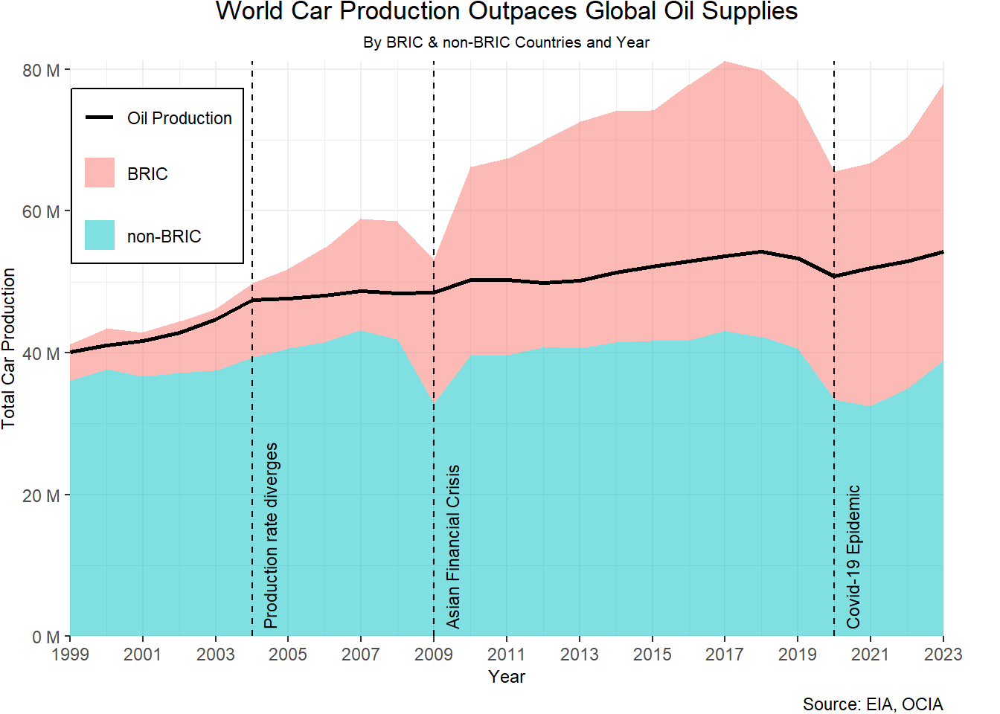

library(tidyverse)
library(dplyr)
library(gt)
library(ggplot2)
library(scales)
library(knitr)Vizualizing Crude Oil Analysis: World car production grows 3 times faster than global oil supplies
Data Preparation
Introduction
This document contains the data engineering required to reconstruct and improve the plot by @Matt, shown in Figure 1, depicting the world car production growth compared to global oil supplies of various countries from the year 1999 to 2012.
The codes below requires the following packages:
Visualization Source
Data Sources
- Cars Production Statistics
- Created CSV from tables data
- Petroleum and Other Liquids: Annual Petroleum and Other Liquids Production
- Deleted Column 1 (API)
Load Data
cars_raw <- read.csv("cars_data.csv")
oil_raw <- read.csv("oil_data.csv")Preview Raw Data
cars_raw |> head() Country.Region Cars Commercial.Vehicles Total Change Year
1 ARGENTINA 304 783 305 942 610 725 14% 2023
2 AUSTRIA 102 291 11 900 114 191 -6% 2023
3 BELGIUM 285 159 46 944 332 103 16% 2023
4 BRAZIL 1 781 612 543 226 2 324 838 -2% 2023
5 CANADA 376 888 1 176 138 1 553 026 26% 2023
6 CHINA 26 123 757 4 037 209 30 160 966 12% 2023oil_raw |> head() X X1973
1 World
2 Production
3 Total petroleum and other liquids (Mb/d)
4 Crude oil, NGPL, and other liquids (Mb/d)
5 Crude oil including lease condensate (Mb/d) 50359.734
6 NGPL (Mb/d)
X1974 X1975 X1976 X1977 X1978 X1979 X1980
1
2
3 63987.8
4 63092.9
5 50376.905 47570.995 51743.766 53881.362 54259.53 56617.534 59557.68724
6 3446.28975
X1981 X1982 X1983 X1984 X1985 X1986
1
2
3 60602 58100.1 57929.3 59563.45794 59156.12543 61534.95768
4 59785.5 57242.9 57123.7 58613.7 58186.9 60769.573
5 55899.59203 53453.19682 53249.76199 54498.53904 53965.43472 56326.14124
6 3630.69 3631.8 3643.3 3872.7 3933 4162.9
X1987 X1988 X1989 X1990 X1991 X1992
1
2
3 62101.27044 64398.73171 65524.91126 66437.18391 66338.8511 66551.97017
4 61257.573 63496.754 64633.954 65482.054 65316.436 65405.968
5 56649.39526 58696.60209 59802.71265 60497.9124 60128.17914 60100.6977
6 4284.5 4498.4 4512.4 4644.9 4816.557 4847.6127
X1993 X1994 X1995 X1996 X1997 X1998 X1999 X2000
1 NA NA NA NA NA NA NA NA
2 NA NA NA NA NA NA NA NA
3 66337.046 68404.809 69738.199 71406.80 73756.479 74754.927 73443.89 75621.90
4 65570.717 67636.848 68963.812 70569.74 72907.076 73868.781 72557.51 74673.98
5 58754.468 60577.428 61568.594 62841.40 65001.265 65921.770 64359.99 66358.85
6 6113.332 6221.953 6457.515 6759.09 6886.418 6894.876 7106.10 7196.93
X2001 X2002 X2003 X2004 X2005 X2006 X2007
1 NA NA NA
2 NA NA NA
3 75764.242 75599.862 78497.801 83153.50174 84672.88548 85250.20133 85474.13004
4 74860.927 74643.300 77523.807 81014.48109 82560.42387 83095.31482 83321.14063
5 66326.615 65772.885 69257.731 72077.98249 74027.85679 74233.60125 74264.11817
6 7366.642 7562.909 6925.111 7349.254426 6909.86617 7028.920096 7042.141485
X2008 X2009 X2010 X2011 X2012 X2013
1
2
3 86767.47017 85716.22519 87317.27823 88481.56412 90769.35776 91305.82012
4 84638.5113 83621.37244 85154.73524 86311.29113 88595.27057 89113.72874
5 74469.65227 73145.72246 74407.78496 75084.26675 76683.47228 76767.80062
6 8191.988077 8350.34626 8050.647305 8358.17598 8870.611047 9031.474242
X2014 X2015 X2016 X2017 X2018 X2019
1
2
3 93899.47441 96659.23578 97108.92 97786.58439 100415.8247 100161.5546
4 91671.57119 94383.14848 94826.63236 95452.9707 98047.28477 97814.97575
5 78611.90046 80965.42423 81022.57698 81202.78312 82930.42156 82123.8627
6 9544.027103 9887.71414 10184.70757 10605.95435 11197.55825 11713.79989
X2020 X2021 X2022 X2023 X2024
1 NA
2 NA
3 93798.40647 95682.74081 100140.0895 101820.3917 NA
4 91691.19374 93419.87336 97830.65042 99486.53155 NA
5 75986.44104 77177.04123 80820.48201 81795.75253 NA
6 11913.23885 12270.0754 12826.3136 13181.20149 NAData Cleaning & Preprocessing
Preprocess Oil Data
Step 1: Get Countries
# Create sequence of row indices in multiplies of 8 to get countries (1, 9, 17, ..., 1849)
countries_indices <- seq(1, nrow(oil_raw), by = 8)
# Select every 8th row
countries_selected <- oil_raw[countries_indices, ]
# Select only the first column
countries_oil <- countries_selected[, 1]
# Display countries
print(countries_oil) [1] "World" "Afghanistan"
[3] "Albania" "Algeria"
[5] "American Samoa" "Angola"
[7] "Antarctica" "Antigua and Barbuda"
[9] "Argentina" "Armenia"
[11] "Aruba" "Australia"
[13] "Austria" "Azerbaijan"
[15] "Bahrain" "Bangladesh"
[17] "Barbados" "Belarus"
[19] "Belgium" "Belize"
[21] "Benin" "Bermuda"
[23] "Bhutan" "Bolivia"
[25] "Bosnia and Herzegovina" "Botswana"
[27] "Brazil" "British Virgin Islands"
[29] "Brunei" "Bulgaria"
[31] "Burkina Faso" "Burma"
[33] "Burundi" "Cabo Verde"
[35] "Cambodia" "Cameroon"
[37] "Canada" "Cayman Islands"
[39] "Central African Republic" "Chad"
[41] "Chile" "China"
[43] "Colombia" "Comoros"
[45] "Congo-Brazzaville" "Congo-Kinshasa"
[47] "Cook Islands" "Costa Rica"
[49] "Cote d'Ivoire" "Croatia"
[51] "Cuba" "Cyprus"
[53] "Czechia" "Denmark"
[55] "Djibouti" "Dominica"
[57] "Dominican Republic" "Ecuador"
[59] "Egypt" "El Salvador"
[61] "Equatorial Guinea" "Eritrea"
[63] "Estonia" "Eswatini"
[65] "Ethiopia" "Falkland Islands"
[67] "Faroe Islands" "Fiji"
[69] "Finland" "Former Czechoslovakia"
[71] "Former Serbia and Montenegro" "Former U.S.S.R."
[73] "Former Yugoslavia" "France"
[75] "French Guiana" "French Polynesia"
[77] "Gabon" "Gambia, The"
[79] "Georgia" "Germany"
[81] "Germany, East" "Germany, West"
[83] "Ghana" "Gibraltar"
[85] "Greece" "Greenland"
[87] "Grenada" "Guadeloupe"
[89] "Guam" "Guatemala"
[91] "Guinea" "Guinea-Bissau"
[93] "Guyana" "Haiti"
[95] "Hawaiian Trade Zone" "Honduras"
[97] "Hong Kong" "Hungary"
[99] "Iceland" "India"
[101] "Indonesia" "Iran"
[103] "Iraq" "Ireland"
[105] "Israel" "Italy"
[107] "Jamaica" "Japan"
[109] "Jordan" "Kazakhstan"
[111] "Kenya" "Kiribati"
[113] "Kosovo" "Kuwait"
[115] "Kyrgyzstan" "Laos"
[117] "Latvia" "Lebanon"
[119] "Lesotho" "Liberia"
[121] "Libya" "Lithuania"
[123] "Luxembourg" "Macau"
[125] "Madagascar" "Malawi"
[127] "Malaysia" "Maldives"
[129] "Mali" "Malta"
[131] "Martinique" "Mauritania"
[133] "Mauritius" "Mexico"
[135] "Micronesia" "Moldova"
[137] "Mongolia" "Montenegro"
[139] "Montserrat" "Morocco"
[141] "Mozambique" "Namibia"
[143] "Nauru" "Nepal"
[145] "Netherlands" "Netherlands Antilles"
[147] "New Caledonia" "New Zealand"
[149] "Nicaragua" "Niger"
[151] "Nigeria" "Niue"
[153] "North Korea" "North Macedonia"
[155] "Northern Mariana Islands" "Norway"
[157] "Oman" "Pakistan"
[159] "Palestinian Territories" "Panama"
[161] "Papua New Guinea" "Paraguay"
[163] "Peru" "Philippines"
[165] "Poland" "Portugal"
[167] "Puerto Rico" "Qatar"
[169] "Reunion" "Romania"
[171] "Russia" "Rwanda"
[173] "Saint Helena" "Saint Kitts and Nevis"
[175] "Saint Lucia" "Saint Pierre and Miquelon"
[177] "Saint Vincent/Grenadines" "Samoa"
[179] "Sao Tome and Principe" "Saudi Arabia"
[181] "Senegal" "Serbia"
[183] "Seychelles" "Sierra Leone"
[185] "Singapore" "Slovakia"
[187] "Slovenia" "Solomon Islands"
[189] "Somalia" "South Africa"
[191] "South Korea" "South Sudan"
[193] "Spain" "Sri Lanka"
[195] "Sudan" "Suriname"
[197] "Sweden" "Switzerland"
[199] "Syria" "Taiwan"
[201] "Tajikistan" "Tanzania"
[203] "Thailand" "The Bahamas"
[205] "Timor-Leste" "Togo"
[207] "Tonga" "Trinidad and Tobago"
[209] "Tunisia" "Turkiye"
[211] "Turkmenistan" "Turks and Caicos Islands"
[213] "Tuvalu" "U.S. Pacific Islands"
[215] "U.S. Territories" "U.S. Virgin Islands"
[217] "Uganda" "Ukraine"
[219] "United Arab Emirates" "United Kingdom"
[221] "United States" "Uruguay"
[223] "Uzbekistan" "Vanuatu"
[225] "Venezuela" "Vietnam"
[227] "Wake Island" "Western Sahara"
[229] "Yemen" "Zambia"
[231] "Zimbabwe" Step 2: Get Years
# Get all the column names, for years
years_selected <- colnames(oil_raw)[2:ncol(oil_raw)]
# Remove "X" and convert to numeric
years_oil <- as.numeric(gsub("X", "", years_selected))
# Display years
print(years_oil) [1] 1973 1974 1975 1976 1977 1978 1979 1980 1981 1982 1983 1984 1985 1986 1987
[16] 1988 1989 1990 1991 1992 1993 1994 1995 1996 1997 1998 1999 2000 2001 2002
[31] 2003 2004 2005 2006 2007 2008 2009 2010 2011 2012 2013 2014 2015 2016 2017
[46] 2018 2019 2020 2021 2022 2023 2024Step 3: Get Petroleum Data from “Total petroleum and other liquids (Mb/d)” Column
# Create indices
total_petroleum_indices <- seq(3, nrow(oil_raw), by = 8)
# Get the data
petroleum_selected <- oil_raw[total_petroleum_indices, ]
# Display petrolum data head()
print(head(petroleum_selected)) X X1973 X1974
3 Total petroleum and other liquids (Mb/d)
11 Total petroleum and other liquids (Mb/d)
19 Total petroleum and other liquids (Mb/d)
27 Total petroleum and other liquids (Mb/d) 1096.90137 1008.860274
35 Total petroleum and other liquids (Mb/d)
43 Total petroleum and other liquids (Mb/d) 162 169
X1975 X1976 X1977 X1978 X1979 X1980
3 63987.8
11 0
19 44
27 982.9972603 1075.259563 1151.849315 1231.052055 1224.167123 1105.907104
35 0
43 165 108 194 131 147 150
X1981 X1982 X1983 X1984 X1985 X1986
3 60602 58100.1 57929.3 59563.45794 59156.12543 61534.95768
11 0 0 0 0 0 0
19 44 64 75 55 55 55
27 1002.032877 986.630137 961.260274 1014.440325 1036.071233 1072
35 0 0 0 0 0 0
43 130 122 177.0054795 208.0245902 231.0000795 282.0002986
X1987 X1988 X1989 X1990 X1991 X1992
3 62101.27044 64398.73171 65524.91126 66437.18391 66338.8511 66551.97017
11 0 0 0 0 0 0
19 54 44 47 30 19 10
27 1071.320548 1045 1105.586301 1180.068493 1170 1201.612022
35 0 0 0 0 0 0
43 360.0001863 452.0081967 455.0003178 475.0005123 500.0002219 526.3200464
X1993 X1994 X1995 X1996 X1997 X1998
3 66337.0462 68404.8092 69738.1987 71406.8033 73756.479140 74754.92657
11 NA NA NA NA NA NA
19 11.0000 10.0000 9.0000 9.0000 7.150392 7.48989
27 1310.1644 1286.2877 1301.3699 1396.7350 1430.191781 1431.04110
35 NA NA NA NA NA NA
43 503.9397 491.7589 639.3123 691.0164 709.786301 732.89863
X1999 X2000 X2001 X2002 X2003 X2004
3 73443.88635 75621.903 75764.2419 75599.8619 78497.8013 83153.50174
11 NA NA NA NA NA 0
19 6.46023 5.716 5.6240 7.1060 6.7810 7.58
27 1376.95890 1435.587 1507.4795 1623.8356 1789.8904 1856.934792
35 NA NA NA NA NA 0
43 747.81342 745.388 739.2849 896.6363 879.0602 990.2883306
X2005 X2006 X2007 X2008 X2009 X2010
3 84672.88548 85250.20133 85474.13004 86767.47017 85716.22519 87317.27823
11 0 0 0 0 0 0
19 6.985 9.072 10.082 6.03453 5.382407123 10.86676562
27 1930.027384 1917.468014 1942.263521 1954.481 1909.823112 1880.8924
35 0 0 0 0 0 0
43 1255.026608 1425.536786 1727.44877 1960.226508 1886.364219 1918.072548
X2011 X2012 X2013 X2014 X2015 X2016
3 88481.56412 90769.35776 91305.82012 93899.47441 96659.23578 97108.92
11 0 0 0 0 0 0
19 15.56251849 16.84497057 17.01442118 20.56920932 20.21514384 22.80052388
27 1862.5645 1875.039769 1762.789322 1721.8256 1798.1049 1698.432256
35 0 0 0 0 0 0
43 1765.134438 1796.58018 1814.168534 1755.945438 1828.000014 1796.777754
X2017 X2018 X2019 X2020 X2021 X2022
3 97786.58439 100415.8247 100161.5546 93798.40647 95682.74081 100140.0895
11 0 0 0 0 0 0
19 17.05404 16.05469 18.05546 17.31385896 16.15055317 15.05975827
27 1632.869525 1576.786934 1570.104304 1404.306744 1415.129339 1473.030681
35 0 0 0 0 0 0
43 1708.354531 1637.116441 1488.932374 1284.13903 1150.417404 1185.254399
X2023 X2024
3 101820.3917 NA
11 0 NA
19 14.04472675 NA
27 1444.291046 NA
35 0 NA
43 1174.422203 NAStep 4: Create new dataframe with Countries, Years, and Total Petroleum and Other Liquids
# Create new dataframe
new_oil_df <- petroleum_selected
# Replace first column with countries
new_oil_df[, 1] <- countries_oil
# Replace column names with numeric years
colnames(new_oil_df) <- c("Country", years_oil)
# Select columns to convert to numeric
columns_to_convert <- names(new_oil_df)[-1]
# Convert columns to numeric, ignoring NA values
suppressWarnings(new_oil_df[, columns_to_convert] <- lapply(new_oil_df[, columns_to_convert], as.numeric))
# Convert first row country names to all upper case
new_oil_df[, 1] <- toupper(new_oil_df[, 1])
# Start index of selected_rows from 0
rownames(new_oil_df) <- NULL
# Write CSV file
write.csv(new_oil_df, file = "processed_oil_all.csv", row.names = FALSE)
# Display new oil dataframe head()
print(head(new_oil_df)) Country 1973 1974 1975 1976 1977 1978 1979
1 WORLD NA NA NA NA NA NA NA
2 AFGHANISTAN NA NA NA NA NA NA NA
3 ALBANIA NA NA NA NA NA NA NA
4 ALGERIA 1096.901 1008.86 982.9973 1075.26 1151.849 1231.052 1224.167
5 AMERICAN SAMOA NA NA NA NA NA NA NA
6 ANGOLA 162.000 169.00 165.0000 108.00 194.000 131.000 147.000
1980 1981 1982 1983 1984 1985 1986
1 63987.800 60602.000 58100.1000 57929.3000 59563.4579 59156.1254 61534.9577
2 0.000 0.000 0.0000 0.0000 0.0000 0.0000 0.0000
3 44.000 44.000 64.0000 75.0000 55.0000 55.0000 55.0000
4 1105.907 1002.033 986.6301 961.2603 1014.4403 1036.0712 1072.0000
5 0.000 0.000 0.0000 0.0000 0.0000 0.0000 0.0000
6 150.000 130.000 122.0000 177.0055 208.0246 231.0001 282.0003
1987 1988 1989 1990 1991 1992 1993
1 62101.2704 64398.7317 65524.9113 66437.1839 66338.8511 66551.970 66337.0462
2 0.0000 0.0000 0.0000 0.0000 0.0000 0.000 NA
3 54.0000 44.0000 47.0000 30.0000 19.0000 10.000 11.0000
4 1071.3205 1045.0000 1105.5863 1180.0685 1170.0000 1201.612 1310.1644
5 0.0000 0.0000 0.0000 0.0000 0.0000 0.000 NA
6 360.0002 452.0082 455.0003 475.0005 500.0002 526.320 503.9397
1994 1995 1996 1997 1998 1999
1 68404.8092 69738.1987 71406.8033 73756.479140 74754.92657 73443.88635
2 NA NA NA NA NA NA
3 10.0000 9.0000 9.0000 7.150392 7.48989 6.46023
4 1286.2877 1301.3699 1396.7350 1430.191781 1431.04110 1376.95890
5 NA NA NA NA NA NA
6 491.7589 639.3123 691.0164 709.786301 732.89863 747.81342
2000 2001 2002 2003 2004 2005 2006
1 75621.903 75764.2419 75599.8619 78497.8013 83153.5017 84672.885 85250.201
2 NA NA NA NA 0.0000 0.000 0.000
3 5.716 5.6240 7.1060 6.7810 7.5800 6.985 9.072
4 1435.587 1507.4795 1623.8356 1789.8904 1856.9348 1930.027 1917.468
5 NA NA NA NA 0.0000 0.000 0.000
6 745.388 739.2849 896.6363 879.0602 990.2883 1255.027 1425.537
2007 2008 2009 2010 2011 2012
1 85474.130 86767.47017 85716.225190 87317.27823 88481.56412 90769.35776
2 0.000 0.00000 0.000000 0.00000 0.00000 0.00000
3 10.082 6.03453 5.382407 10.86677 15.56252 16.84497
4 1942.264 1954.48100 1909.823112 1880.89240 1862.56450 1875.03977
5 0.000 0.00000 0.000000 0.00000 0.00000 0.00000
6 1727.449 1960.22651 1886.364219 1918.07255 1765.13444 1796.58018
2013 2014 2015 2016 2017 2018
1 91305.82012 93899.47441 96659.23578 97108.92000 97786.58439 100415.82470
2 0.00000 0.00000 0.00000 0.00000 0.00000 0.00000
3 17.01442 20.56921 20.21514 22.80052 17.05404 16.05469
4 1762.78932 1721.82560 1798.10490 1698.43226 1632.86953 1576.78693
5 0.00000 0.00000 0.00000 0.00000 0.00000 0.00000
6 1814.16853 1755.94544 1828.00001 1796.77775 1708.35453 1637.11644
2019 2020 2021 2022 2023 2024
1 100161.55460 93798.40647 95682.74081 100140.08950 101820.39170 NA
2 0.00000 0.00000 0.00000 0.00000 0.00000 NA
3 18.05546 17.31386 16.15055 15.05976 14.04473 NA
4 1570.10430 1404.30674 1415.12934 1473.03068 1444.29105 NA
5 0.00000 0.00000 0.00000 0.00000 0.00000 NA
6 1488.93237 1284.13903 1150.41740 1185.25440 1174.42220 NAPreprocess Cars Data
Step 1: Process Countries Names, Remove Datarows with Empty Strings (““)
# Create new dataframe
new_cars_df <- cars_raw
# Convert column 1 names to upper
new_cars_df[, 1] <- toupper(new_cars_df[, 1])
# Find rows where the data in the first column is ""
rows_with_empty_first_column <- which(new_cars_df[, 1] == "")
# Find rows where the data in the first column is not ""
rows_to_keep <- new_cars_df[, 1] != ""
# Subset the data frame to keep rows where the data in the first column is not ""
new_cars_df <- new_cars_df[rows_to_keep, ]
# Display new cars dataframe head()
print(head(new_cars_df)) Country.Region Cars Commercial.Vehicles Total Change Year
1 ARGENTINA 304 783 305 942 610 725 14% 2023
2 AUSTRIA 102 291 11 900 114 191 -6% 2023
3 BELGIUM 285 159 46 944 332 103 16% 2023
4 BRAZIL 1 781 612 543 226 2 324 838 -2% 2023
5 CANADA 376 888 1 176 138 1 553 026 26% 2023
6 CHINA 26 123 757 4 037 209 30 160 966 12% 2023Step 2: Get Unique Countries
# Get unique values in column 1
unique_countries <- unique(new_cars_df[,1])
# Print unique countries
print(unique_countries) [1] "ARGENTINA" "AUSTRIA" "BELGIUM" "BRAZIL"
[5] "CANADA" "CHINA" "CZECH REPUBLIC" "FINLAND"
[9] "FRANCE" "GERMANY" "HUNGARY" "INDIA"
[13] "INDONESIA" "ITALY" "JAPAN" "KAZAKHSTAN"
[17] "MALAYSIA" "MOROCCO" "MEXICO" "POLAND"
[21] "PORTUGAL" "ROMANIA" "RUSSIA" "SLOVAKIA"
[25] "SLOVENIA" "SOUTH AFRICA" "SOUTH KOREA" "SPAIN"
[29] "TAIWAN" "THAILAND" "TURKEY" "UKRAINE"
[33] "UNITED KINGDOM" "USA" "UZBEKISTAN" "OTHERS"
[37] "SERBIA" "EGYPT" "IRAN" "CZECH REP."
[41] "UK" "COLOMBIA" "AUSTRALIA" "NETHERLANDS"
[45] "SWEDEN" "SUPPLEMENTARY" Step 3: Change values to Match Common Country Names
# Change values in the first column from "CZECH REP." to "CZECH REPUBLIC"
new_cars_df[new_cars_df[, 1] == "CZECH REP.", 1] <- "CZECH REPUBLIC"
# Get unique values in column 1
unique_countries <- unique(new_cars_df[,1])
# Check unique countries is correct
print(unique_countries) [1] "ARGENTINA" "AUSTRIA" "BELGIUM" "BRAZIL"
[5] "CANADA" "CHINA" "CZECH REPUBLIC" "FINLAND"
[9] "FRANCE" "GERMANY" "HUNGARY" "INDIA"
[13] "INDONESIA" "ITALY" "JAPAN" "KAZAKHSTAN"
[17] "MALAYSIA" "MOROCCO" "MEXICO" "POLAND"
[21] "PORTUGAL" "ROMANIA" "RUSSIA" "SLOVAKIA"
[25] "SLOVENIA" "SOUTH AFRICA" "SOUTH KOREA" "SPAIN"
[29] "TAIWAN" "THAILAND" "TURKEY" "UKRAINE"
[33] "UNITED KINGDOM" "USA" "UZBEKISTAN" "OTHERS"
[37] "SERBIA" "EGYPT" "IRAN" "UK"
[41] "COLOMBIA" "AUSTRALIA" "NETHERLANDS" "SWEDEN"
[45] "SUPPLEMENTARY" Step 4: Pivot Wider on Year, Concatenate Vertically on Data on Common Country Names, Change Column Data Type to Numeric
# Get all column headers
column_headers <- colnames(new_cars_df)
# Pivot wider on Year
new_cars_df <- pivot_wider(new_cars_df, names_from = "Year", values_from = "Total")
# Remove Cars, Commercial.Vehicles, Change columns
new_cars_df <- new_cars_df[, -c(2, 3, 4)]
# Change all columns to numeric except the first column, replace comma and space in numeric terms
new_cars_df[, -1] <- lapply(new_cars_df[, -1], function(x) as.numeric(gsub("[ ,]", "", x)))
# Concatenate vertically the columns where they have the same country.region name
new_cars_df <- new_cars_df |>
group_by(Country.Region) |>
summarise(across(.cols = everything(), .fns = ~sum(.x, na.rm = TRUE)))
# Rename first column to Country
colnames(new_cars_df)[1] <- "Country"
# Write CSV file
write.csv(new_cars_df, file = "processed_cars_all.csv", row.names = FALSE)
# Display new cars dataframe head()
print(head(new_cars_df))# A tibble: 6 × 26
Country `2023` `2022` `2021` `2020` `2019` `2018` `2017` `2016` `2015` `2014`
<chr> <dbl> <dbl> <dbl> <dbl> <dbl> <dbl> <dbl> <dbl> <dbl> <dbl>
1 ARGENTI… 6.11e5 5.37e5 4.35e5 2.57e5 3.15e5 4.67e5 4.72e5 4.73e5 5.34e5 6.17e5
2 AUSTRAL… 0 0 0 0 0 0 9.86e4 1.61e5 1.73e5 1.80e5
3 AUSTRIA 1.14e5 1.08e5 1.37e5 1.05e5 1.79e5 1.65e5 9.99e4 1.08e5 1.26e5 1.52e5
4 BELGIUM 3.32e5 2.77e5 2.61e5 2.67e5 2.86e5 3.08e5 3.79e5 3.99e5 4.09e5 5.17e5
5 BRAZIL 2.32e6 2.37e6 2.25e6 2.01e6 2.94e6 2.88e6 2.70e6 2.16e6 2.43e6 3.15e6
6 CANADA 1.55e6 1.23e6 1.12e6 1.38e6 1.92e6 2.02e6 2.20e6 2.37e6 2.28e6 2.39e6
# ℹ 15 more variables: `2013` <dbl>, `2012` <dbl>, `2011` <dbl>, `2010` <dbl>,
# `2009` <dbl>, `2008` <dbl>, `2007` <dbl>, `2006` <dbl>, `2005` <dbl>,
# `2004` <dbl>, `2003` <dbl>, `2002` <dbl>, `2001` <dbl>, `2000` <dbl>,
# `1999` <dbl>Data Summarisation: Get Common Data from both Cars and Oil Data
Step 1: Get Common Countries and Years
# Get Common Countries
common_countries <- intersect(new_cars_df$Country, new_oil_df$Country)
print(common_countries) [1] "ARGENTINA" "AUSTRALIA" "AUSTRIA" "BELGIUM"
[5] "BRAZIL" "CANADA" "CHINA" "COLOMBIA"
[9] "EGYPT" "FINLAND" "FRANCE" "GERMANY"
[13] "HUNGARY" "INDIA" "INDONESIA" "IRAN"
[17] "ITALY" "JAPAN" "KAZAKHSTAN" "MALAYSIA"
[21] "MEXICO" "MOROCCO" "NETHERLANDS" "POLAND"
[25] "PORTUGAL" "ROMANIA" "RUSSIA" "SERBIA"
[29] "SLOVAKIA" "SLOVENIA" "SOUTH AFRICA" "SOUTH KOREA"
[33] "SPAIN" "SWEDEN" "TAIWAN" "THAILAND"
[37] "UKRAINE" "UNITED KINGDOM" "UZBEKISTAN" # Get Common Years
common_years <- intersect(colnames(new_cars_df)[-1], colnames(new_oil_df)[-1])
print(common_years) [1] "2023" "2022" "2021" "2020" "2019" "2018" "2017" "2016" "2015" "2014"
[11] "2013" "2012" "2011" "2010" "2009" "2008" "2007" "2006" "2005" "2004"
[21] "2003" "2002" "2001" "2000" "1999"Step 2: Get Common Data
# Filter data based on common countries and common years
new_cars_df_filtered <- new_cars_df |>
filter(Country %in% common_countries) |>
select(all_of(c("Country", common_years)))
print(new_cars_df_filtered)# A tibble: 39 × 26
Country `2023` `2022` `2021` `2020` `2019` `2018` `2017` `2016` `2015` `2014`
<chr> <dbl> <dbl> <dbl> <dbl> <dbl> <dbl> <dbl> <dbl> <dbl> <dbl>
1 ARGENT… 6.11e5 5.37e5 4.35e5 2.57e5 3.15e5 4.67e5 4.72e5 4.73e5 5.34e5 6.17e5
2 AUSTRA… 0 0 0 0 0 0 9.86e4 1.61e5 1.73e5 1.80e5
3 AUSTRIA 1.14e5 1.08e5 1.37e5 1.05e5 1.79e5 1.65e5 9.99e4 1.08e5 1.26e5 1.52e5
4 BELGIUM 3.32e5 2.77e5 2.61e5 2.67e5 2.86e5 3.08e5 3.79e5 3.99e5 4.09e5 5.17e5
5 BRAZIL 2.32e6 2.37e6 2.25e6 2.01e6 2.94e6 2.88e6 2.70e6 2.16e6 2.43e6 3.15e6
6 CANADA 1.55e6 1.23e6 1.12e6 1.38e6 1.92e6 2.02e6 2.20e6 2.37e6 2.28e6 2.39e6
7 CHINA 3.02e7 2.70e7 2.61e7 2.52e7 2.57e7 2.78e7 2.90e7 2.81e7 2.45e7 2.37e7
8 COLOMB… 0 0 0 0 0 7.28e4 0 0 0 0
9 EGYPT 0 0 2.38e4 2.38e4 1.85e4 7.16e4 3.66e4 3.62e4 3.60e4 4.25e4
10 FINLAND 3.02e4 7.30e4 9.32e4 8.63e4 1.15e5 1.12e5 9.16e4 5.53e4 6.91e4 4.50e4
# ℹ 29 more rows
# ℹ 15 more variables: `2013` <dbl>, `2012` <dbl>, `2011` <dbl>, `2010` <dbl>,
# `2009` <dbl>, `2008` <dbl>, `2007` <dbl>, `2006` <dbl>, `2005` <dbl>,
# `2004` <dbl>, `2003` <dbl>, `2002` <dbl>, `2001` <dbl>, `2000` <dbl>,
# `1999` <dbl>new_oil_df_filtered <- new_oil_df |>
filter(Country %in% common_countries) |>
select(all_of(c("Country", common_years)))
print(head(new_oil_df_filtered)) Country 2023 2022 2021 2020 2019 2018
1 ARGENTINA 819.01880 787.22749 708.55453 656.8417 723.05932 704.8591
2 AUSTRALIA 408.30200 436.04136 460.13427 475.1732 475.30954 364.6695
3 AUSTRIA 23.10377 23.94636 24.90203 24.4670 26.44212 26.9227
4 BELGIUM 24.93928 24.60583 24.79236 23.6427 24.35280 18.8857
5 BRAZIL 4281.78103 3810.26619 3689.54981 3767.5390 3659.46014 3412.7907
6 CANADA 5763.26495 5693.53353 5537.45100 5234.6501 5477.58579 5348.1456
2017 2016 2015 2014 2013 2012 2011
1 686.30951 705.0373 705.26304 713.04211 704.9671 720.72212 742.29839
2 336.95184 367.0326 396.46722 441.67774 425.2743 500.65341 508.29693
3 27.18665 29.3610 31.57499 30.84496 26.9820 36.15534 36.10133
4 19.60250 19.9088 21.05700 25.50090 20.9840 20.26460 20.06650
5 3356.21565 3219.3821 3170.19226 2954.47143 2697.2733 2655.85194 2687.04165
6 4946.55516 4576.8188 4493.86716 4378.22067 4056.8525 3842.11904 3583.71657
2010 2009 2008 2007 2006 2005 2004
1 786.86206 786.1241 804.5547 802.62792 831.17963 830.3295 888.32444
2 584.96211 576.0445 569.4678 567.52612 560.69682 543.5201 573.15859
3 35.62572 27.5462 27.7143 28.04171 26.19536 25.3807 26.38027
4 21.12370 10.9045 10.7599 11.22400 11.91400 8.6910 10.68800
5 2714.30939 2554.2000 2429.4303 1895.93353 1863.85300 1756.6057 1584.54709
6 3429.99347 3308.3737 3345.1751 3492.69268 3382.95964 3202.2939 3158.52546
2003 2002 2001 2000 1999
1 876.69726 895.37863 918.69818 862.82310 894.80706
2 618.16222 717.14611 738.77292 802.44615 616.76200
3 20.40548 21.72055 20.83014 19.68142 19.16712
4 NA NA NA NA NA
5 1548.22365 1499.03372 1336.32948 1268.05669 1129.35107
6 3003.46518 2858.15932 2727.95358 2721.54163 2603.83093Step 3: Write CSV Out for Filtered Data
# Write CSV file for cars
write.csv(new_cars_df_filtered, file = "processed_cars_filtered.csv", row.names = FALSE)
# Write CSV file for oil
write.csv(new_oil_df_filtered, file = "processed_oil_filtered.csv", row.names = FALSE)Step 4: Get Oil Production Split by BRIC and Non-BRIC
# Filter BRIC countries
bric_countries_oil <- new_oil_df_filtered |>
filter(Country %in% c("BRAZIL", "RUSSIA", "INDIA", "CHINA"))
# Total BRIC countries oil production
total_bric_oil <- bric_countries_oil |>
summarise(across(.cols = 2:ncol(bric_countries_oil), .fns = ~sum(., na.rm = TRUE)))
# Include first column as BRIC name
total_bric_oil <- cbind("Country" = "BRIC", total_bric_oil)
# Filter non-BRIC countries
non_bric_countries_oil <- new_oil_df_filtered |>
filter(!Country %in% c("BRAZIL", "RUSSIA", "INDIA", "CHINA"))
# Total non-BRIC countries oil production
total_non_bric_oil <- non_bric_countries_oil |>
summarise(across(.cols = 2:ncol(non_bric_countries_oil), .fns = ~sum(., na.rm = TRUE)))
# Include first column as non-BRIC name
total_non_bric_oil <- cbind("Country" = "non-BRIC", total_non_bric_oil)
# Bind both tables
total_oil_grouped = rbind(total_bric_oil, total_non_bric_oil)
print(total_oil_grouped) Country 2023 2022 2021 2020 2019 2018 2017
1 BRIC 21209.40 20822.05 20336.11 19977.71 20915.27 20489.35 20261.31
2 non-BRIC 20512.81 19906.88 19627.93 19096.64 20069.78 21263.51 20972.79
2016 2015 2014 2013 2012 2011 2010 2009
1 20282.90 20303.09 19780.91 19296.99 18957.88 18704.24 18511.54 17665.75
2 20427.56 19798.02 19720.28 19309.64 19413.10 19993.77 20158.08 19641.60
2008 2007 2006 2005 2004 2003 2002 2001
1 17347.22 16855.94 16394.47 16092.53 15577.90 14332.59 13386.91 12455.06
2 19896.89 20597.87 20590.74 20556.68 20939.99 20106.61 19590.73 19614.03
2000 1999
1 11825.73 11202.34
2 19715.98 19648.39Step 5: Get Car Production by BRIC and Non-BRIC
# Filter BRIC countries
bric_countries_cars <- new_cars_df_filtered |>
filter(Country %in% c("BRAZIL", "RUSSIA", "INDIA", "CHINA"))
# Total BRIC countries car production
total_bric_cars <- bric_countries_cars |>
summarise(across(.cols = 2:ncol(bric_countries_cars), .fns = ~sum(., na.rm = TRUE)))
# Include first column as BRIC name
total_bric_cars <- cbind("Country" = "BRIC", total_bric_cars)
# Filter non-BRIC countries
non_bric_countries_cars <- new_cars_df_filtered |>
filter(!Country %in% c("BRAZIL", "RUSSIA", "INDIA", "CHINA"))
# Total non-BRIC countries car production
total_non_bric_cars <- non_bric_countries_cars |>
summarise(across(.cols = 2:ncol(non_bric_countries_cars), .fns = ~sum(., na.rm = TRUE)))
# Include first column as non-BRIC name
total_non_bric_cars <- cbind("Country" = "non-BRIC", total_non_bric_cars)
# Bind both tables
processed_cars_grouped <- rbind(total_bric_cars, total_non_bric_cars)
print(processed_cars_grouped) Country 2023 2022 2021 2020 2019 2018 2017
1 BRIC 39067175 35455701 34295902 32069078 34901454 37631324 38049295
2 non-BRIC 38988778 34893446 32466356 33453968 40620933 42228115 43091627
2016 2015 2014 2013 2012 2011 2010 2009
1 36068104 32442932 32610036 31919875 29082132 27744303 26606806 20340479
2 41729816 41701514 41492992 40621220 40807675 39615773 39636791 32797669
2008 2007 2006 2005 2004 2003 2002 2001
1 16637785 15773455 13327908 11241637 10449007 8711792 7192880 6216970
2 41893931 43160061 41491305 40607862 39322338 37459116 37200118 36650956
2000 1999
1 5757527 5168682
2 37671031 36033065Step 4: Write CSV Out for Car and Oil Data
# Write CSV file for BRIC oil
write.csv(total_oil_grouped, file = "processed_oil_grouped.csv", row.names = FALSE)
# Write CSV file for Car Production (BRIC & Non BRIC)
write.csv(processed_cars_grouped, file = "processed_cars_grouped.csv", row.names = FALSE)Step 5: Consolidate all relevant data into 1 dataframe for plotting
processed_cars_grouped = processed_cars_grouped |>
mutate(Class = "Cars")
total_oil_grouped= total_oil_grouped |>
mutate(Class = "Oil")
all_data_grouped = rbind(processed_cars_grouped |> mutate(Class = "Cars"), total_oil_grouped |> mutate(Class = "Oil"))Data Visualization
World Car Production Outpaces Global Oil Supplies
suppressWarnings({
# Pivot Oil Data for plotting
total_oil <- total_oil_grouped |>
pivot_longer(cols = -c(Country, Class), names_to = "Year", values_to = "Total") |>
group_by(Year) |>
summarise(Sum = sum(Total))
# Pivot Car data for plotting
total_car <- all_data_grouped |>
pivot_longer(cols = -c(Country, Class), names_to = "Year", values_to = "Total") |>
pivot_wider(names_from = Class, values_from = Total)
# Plot using ggplot
ggplot() +
geom_area(data = total_car, aes(x = as.numeric(Year), y = Cars, fill = Country, group = Country), alpha = 0.5, linewidth = 0.8) +
geom_line(data = total_oil, aes(x = as.numeric(Year), y = Sum * 1300, color = 'Oil Production'), linewidth=1) +
geom_vline(xintercept = as.numeric(c("2004", "2009", "2020")), linetype = 2, group=1, color = 'black', linewidth = 0.5) +
annotate(geom = "text", x = as.numeric("2004"), y = 1e+6, hjust = 0, vjust = 1.8, size = 3, label = "Production rate diverges", color = "black", angle = 90) +
annotate(geom = "text", x = as.numeric("2009"), y = 1e+6, hjust = 0, vjust = 1.8, size = 3, label = "Asian Financial Crisis", color = "black", angle = 90) +
annotate(geom = "text", x = as.numeric("2020"), y = 1e+6, hjust = 0, vjust = 1.8, size = 3, label = "Covid-19 Epidemic", color = "black", angle = 90) +
labs(title = "World Car Production Outpaces Global Oil Supplies",
subtitle = "By BRIC & non-BRIC Countries and Year",
x = "Year",
y = "Total Car Production",
caption = "Source: EIA, OCIA") +
scale_y_continuous(labels = scales::unit_format(unit = "M", scale = 1e-6), expand = c(0, 0)) +
scale_x_continuous(breaks = seq(1999, 2023, by = 2), limits = c(1999, 2023), expand = c(0, 0)) +
scale_color_manual(name = "Country", values = c("#000000"), labels = c("Oil Production")) +
theme(plot.title = element_text(size = 13, hjust = 0.5),
plot.subtitle = element_text(size = 8, hjust = 0.5),
axis.title.x = element_text(size = 9),
axis.title.y = element_text(size = 9),
legend.position = c(0.1, 0.8),
legend.title = element_blank(),
legend.spacing.y = unit(0.0, "cm"),
legend.key.spacing.y = unit(0.5, "cm"),
legend.background = element_blank(),
legend.box.background = element_rect(linewidth = 0.5),
panel.background = element_rect(fill='white'),
panel.grid.major = element_line(color = "#EEEEEE"),
panel.grid.minor = element_line(color = "#EEEEEE"),
plot.margin = unit(c(0,1,0,0), "cm"))
})
Yearly Change of Car and Oil Production
suppressWarnings({
# Pivot all data
longdata = all_data_grouped |>
pivot_longer(cols = !c(Country, Class), names_to = "Year", values_to = "Total") |>
pivot_wider(names_from = Class, values_from = Total) |>
arrange(Year)
# Add YoY % change to columns
data = longdata |>
group_by(Country) |>
mutate(Car_Change = round(c(NA, diff(Cars)) / lag(Cars, default = 0) * 100, digits = 2)) |>
mutate(Oil_Change = round(c(NA, diff(Oil)) / lag(Oil, default = 0) * 100, digits = 2)) |>
arrange(Country) |>
mutate(across(c(Car_Change, Oil_Change), ~ replace(., is.na(.), 0)))
# Aggregate oil data
oil_sum = data |>
ungroup() |>
group_by(Year) |>
summarise(total = sum(Oil_Change))
# Plot using ggplot
ggplot() +
geom_line(data = data, aes(x = Year, y = Car_Change, group = Country, color = Country), linetype = 'solid', linewidth = 0.8, alpha = 1) +
geom_line(data = oil_sum, aes(x = Year, y = total, color = 'Oil Change'), group = 1, linetype = 'solid', linewidth = 0.6, alpha = 1) +
geom_vline(xintercept = "2004", linetype = 2, color = 'black', linewidth = 0.5) +
geom_vline(xintercept = "2009", linetype = 2, color = 'black', linewidth = 0.5) +
geom_vline(xintercept = "2020", linetype = 2, color = 'black', linewidth = 0.5) +
annotate(geom = "text", x = "2004", y = -24, hjust = 0, vjust = 1.8, size = 3, label = "Production rate diverges", color = "black", angle = 90) +
annotate(geom = "text", x = "2009", y = -24, hjust = 0, vjust = 1.8, size = 3, label = "Asian Financial Crisis", color = "black", angle = 90) +
annotate(geom = "text", x = "2020", y = -24, hjust = 0, vjust = 1.8, size = 3, label = "Covid-19 Epidemic", color = "black", angle = 90) +
geom_hline(yintercept = 0) +
geom_vline(xintercept = "1999") +
scale_x_discrete(breaks = function(x) { x[c(TRUE, FALSE)] }, expand = c(0, 0)) +
scale_color_manual(labels = c("BRIC - Car Production", "Non-BRIC - Car Production", "Oil Production"), values = c("#F8766D","#619CFF", "#000000")) +
labs(title = "Yearly Change of Car and Oil Production",
subtitle = "By BRIC & non-BRIC Countries and Year",
x = "Year",
y = "% Change",
caption = "Source: EIA, OCIA") +
theme(
plot.title = element_text(size = 13, hjust = 0.5),
plot.subtitle = element_text(size = 8, hjust = 0.5),
axis.title.x = element_text(size = 9),
axis.title.y = element_text(size = 9),
legend.position = c(0.85,0.85),
legend.title = element_blank(),
legend.key.size = unit(0.5, "cm"),
legend.spacing.y = unit(0.0, "cm"),
legend.key.spacing.y = unit(0.5, "cm"),
legend.text = element_text(size = 7),
legend.background = element_blank(),
legend.box.background = element_rect(linewidth = 0.5),
panel.background = element_rect(fill = 'white'),
panel.grid.major = element_line(color = "#EEEEEE"),
panel.grid.minor = element_line(color = "#EEEEEE"),
plot.margin = unit(c(0, 1, 0, 0), "cm")
)
})